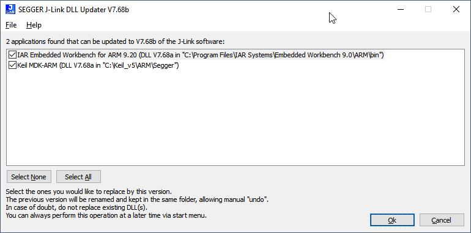
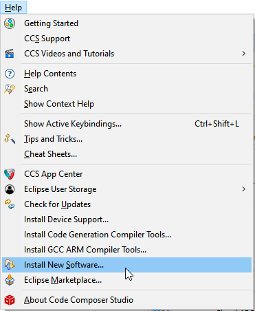
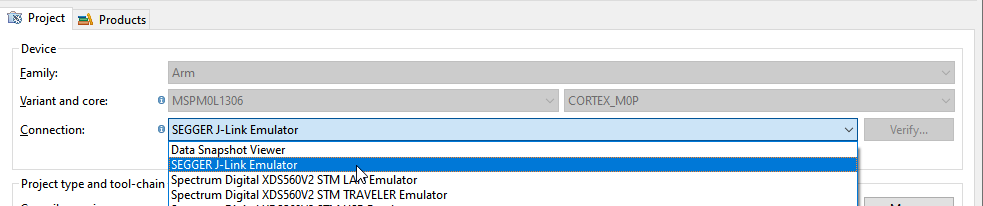
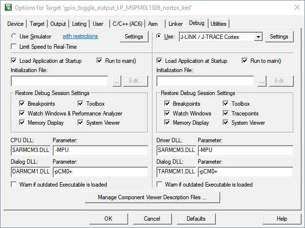
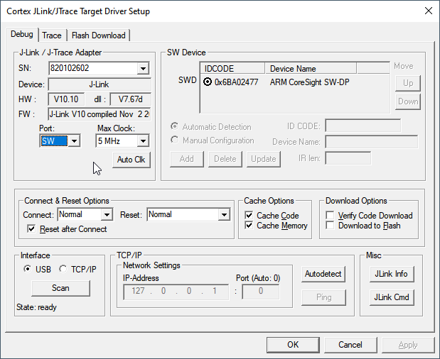

将 Segger 编程器与 MSPM0 配合使用¶
1. 引言¶
本指南说明了如何将 Segger 编程器与 MSPM0 配合使用。
本文档不用于详细说明如何使用 Segger 工具。有关详细文档，请参阅相应的 IDE 或 Segger 文档。
2. 先决条件¶
用户应已下载以下各项：
可选：
使用您首选的 IDE 和编译器来编译应用程序
3. 安装 J-Link 软件包¶
J-Link 软件包 v7.88i 或更高版本支持 MSPM0。
从 Segger 网站下载安装程序
按照安装程序说明操作

安装程序将自动请求更新 IAR 或 Keil（如果已安装）

4. 将 Segger J-Link 与 CCS 配合使用¶
按照此处说明和如下所示更新 Segger 驱动程序：
1.1. 依次点击“Help → Install New Software”
 1.2. 按照此处说明或如下所示添加 J-Link 存储库：

1.3. 选择适当插件，并按照说明继续安装
注意：如果插件不可见，请在 CCS 中调整代理设置。

1.4. 确保插件版本正确。可能需要重新启动 CCS 才能正确更新插件版本。
在工程的“Connection”中选择“SEGGER J-Link Emulator”：
注意：如果未正确应用插件，则此选项不可用。
 打开工程内的 .ccxml 文件

选择“CORTEX_M0P”内核，并在“Target Interface”中选择“SWD”

对器件进行编程和调试。
5. 将 Segger J-Link 与 IAR 配合使用¶
安装最新 Segger 软件时，将更新适用于 IAR 的 Segger 驱动程序。
更改调试器设置以使用 J-Link：

对器件进行编程和调试。
6. 将 Segger J-Link 与 Keil 配合使用¶
安装最新 Segger 软件时，将更新适用于 Keil 的 Segger 驱动程序。
更改调试器设置以使用 J-Link：
 选择 SWD 接口
 对器件进行编程和调试。
7. 将 Segger J-Flash 与 CCS 十六进制实用程序配合使用¶
使用 CCS 十六进制实用程序为 Segger J-Flash 软件生成输出文件时，请遵循 CCS IDE 指南中如何生成 TI .TXT（及其他格式）文件部分的说明。
8. 将J-Link脚本与IDE一起使用¶
尝试在任何IDE中使用J-Link脚本时，请参阅SEGGER提供的以下文档:
9. 已知问题和常见问题解答(FAQ)¶
有关低功耗模式处理等其他问题，请参阅 已知问题和常见问题 在SDK中。